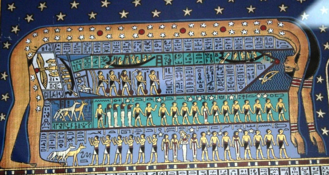
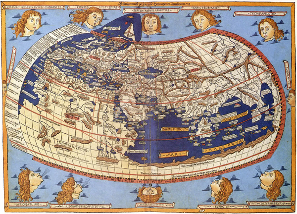
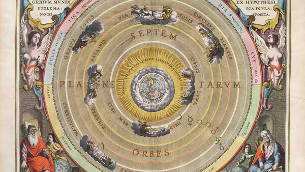
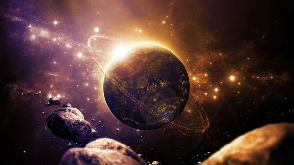
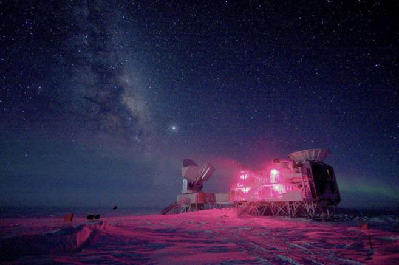
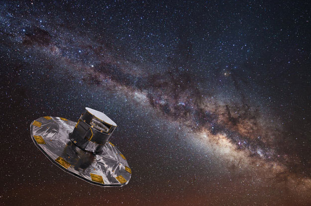

Lean More
Welcome to our stellar corner, where a passionate group of amateur astronomers come together with a common purpose: to explore the wonders of the cosmos and share the fascination with the beauty that lies beyond our atmosphere.
We are a diverse team of enthusiasts who, driven by curiosity and admiration for space, dedicate our time to studying every corner of the sky. Our goal is clear: we want to open the doors of the universe and allow everyone to experience the magnificence of the celestial.
Our Inspiration
Giovani Cassini
Read More
Charles Messier
Read More
William Herschel
Read More
Evolution of astronomi
antiquity
At the dawn of civilization, ancient cultures turned their gaze to the sky, not only as a source of mystery, but also as a practical tool for measuring time. Civilizations such as the Egyptian and Babylonian made fundamental astronomical observations, using the movement of celestial bodies to create calendars that would guide their rituals and agricultural activities
renaissance
The Renaissance marked a resurgence of interest in astronomy, and figures such as Nicholas Copernicus challenged traditional conceptions by proposing a heliocentric model of the solar system. Johannes Kepler formulated precise laws on planetary motion, while Galileo Galilei, with his telescopic observations, reinforced the heliocentric theory and transformed the perception of the cosmos.
Century of Lights
In the 18th century, astronomer William Herschel discovered the planet Uranus, thus expanding knowledge of the solar system. His work also contributed to the understanding of the extent of the universe, marking a significant step towards perceiving the immensity of the cosmos.
The Celestial Age
The 19th century witnessed more notable discoveries. John Herschel, son of William, made important advances in astronomical photography, allowing a new way of documenting and studying the sky. Furthermore, astronomers Adams and Leverrier predicted and discovered the planet Neptune, a demonstration of the precision achieved by astronomical theories
The Cosmic Period
The 20th century was an era of revolutions in astronomy. Albert Einstein formulated his theory of relativity, providing a new framework for understanding gravity. Edwin Hubble, through observations with the Mount Wilson Observatory telescope, identified galaxies beyond the Milky Way and demonstrated the expansion of the universe, establishing Hubble's Law
Present
In the 21st century, space exploration and astronomy have reached new heights. Missions like Kepler identified thousands of exoplanets, redefining our understanding of the diversity of the solar system. The successful launch of the James Webb Space Telescope (scheduled for 2021) promises to reveal new mysteries of the universe, marking an exciting era of cosmic discoveries. With continued advancement in technology and international collaboration, astronomy remains a fascinating window into the unknown
Sponsors
With this calendar you can see the astrological events that are taking place this month, from meteor showers to eclipses.
You just have to click on the highlighted day to see what will happen